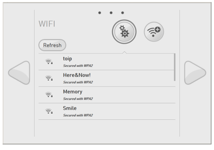
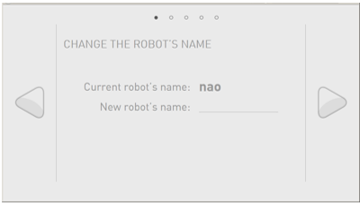
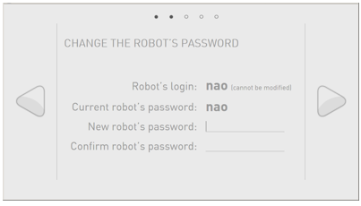
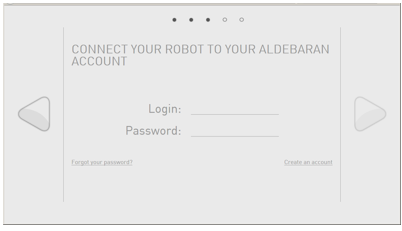

Configuring NAO for the first time¶
When connecting for the first time NAO to a network, a step by step Getting started wizard guides you through key settings:
NAO - Getting started wizard¶
Getting started language and software agreement¶
| Step | Action |
|---|---|
Choose the language to use in the current wizard. 
Click the next button. |
|
Check and validate the 2 conditions of the End-user Software License Agreement. 
Click the next button. |
Setting WiFi connection¶
| Step | Action |
|---|---|
Select one of the available WiFi networks. Note: choose a Wifi network having one of the Supported personal securities. For further details, see: Why setting a WiFi connection. |
|
Complete the required parameters, and click the Connect button. 
Tips: Do not remove the cable yet: the wizard requires the Ethernet connection. Click the next button. |
Customizing your robot¶
| Step | Action |
|---|---|
Customize the name of your robot. This is useful if you have more than one NAO. Click the next button. |
|
Change the password securing the access to the robot. Warning Keep the password! Robot’s password is mandatory to connect to the robot and to its Web page. Click the next button. |
|
Complete the login and password you used to access to the Aldebaran Cloud. Click the next button. |
|
Two cases:
|
Switching to WiFi connection¶
| Step | Action |
|---|---|
| Remove the Ethernet cable and put back the hatch behind the head of the robot. | |
| Follow Accessing the NAO Web page to discover more settings such as Language, Volume and Time zone. |